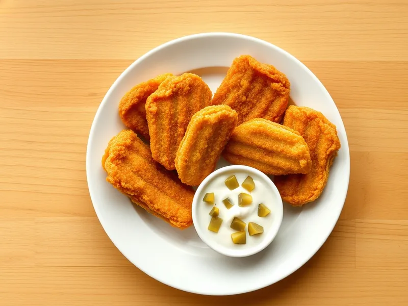

Жареный сыр в панировке по-чешски
Толстые ломти твёрдого сыра в двойной панировке, обжаренные до хруста, с соусом тартар
20 мин3 порц.724 ккал на порциюБ 34 · Ж 55 · У 23Европейская кухня
Открыть в приложении: порции, таймеры, список покупок
Продукты на 3 порц.
- Сыр твёрдый300 г
- Яйцо куриное2 шт
- Мука пшеничная1,5 ст. л.
- Панировочные сухари6 ст. л.
- Растительное масло40 мл
- Майонез2 ст. л.
- Огурцы солёные по желанию1 шт
Как готовить
- Нарежьте сыр пластами толщиной 1-1,5 см (6 штук). Взбейте яйца в тарелке, муку и сухари насыпьте в отдельные тарелки.
- Обваляйте каждый пласт в муке, затем в яйце и сухарях, и ещё раз в яйце и сухарях - 5 минут. Края пропанируйте особенно тщательно.
- Налейте в сковороду масло слоем около 5 мм и разогрейте на среднем огне.
- Жарьте сыр 1-1,5 минуты с каждой стороны до золотистой хрустящей корочки - сыр внутри должен только начать плавиться.
- Выложите на бумажную салфетку на 1 минуту.
- Для соуса смешайте майонез с мелко нарезанным солёным огурцом. Подавайте сыр сразу, горячим.
Совет. Двойная панировка обязательна: в одинарной сыр быстро вытекает. Если корочка где-то порвалась, сразу снимайте ломоть с огня.